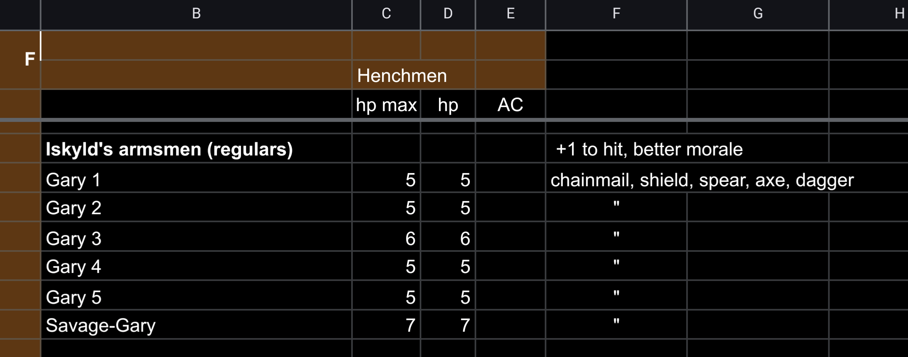

Get hirelings
Especially at low levels, the party is outnumbered by the enemies in the dungeon, and those enemies are each at best a roughly equal match to a player character. This equation has an inevitable outcome: Combat kills. For dungeon exploration to be anything other than a deadly roulette wheel, the party needs to change the equation. Get hirelings. Don’t go into the dungeon with four or six swords, go in with twenty or more. You want to reliably outnumber all but the largest groups of enemies.
Ten or twenty hirelings represents a massive outlay of costs, and depending on your rules, a massive investment in lost XP. It’s worth it. XP is rare and hard to come by because dungeons are so risky. Reduce the risk, and XP becomes much more of a sure thing.
Once the party has a few levels, these calculations change. Depending on the dungeon, you might find the effectiveness of hirelings drops off around 3rd or 4th level.
The Spear Block
Hirelings are individually weak. Their strength is in numbers. Train and equip them so that they can fight two ranks deep. Holding a corridor against charging orcs or goblins means that your party can’t be easily surrounded or cut off. In a standard 10’ corridor, it only takes four hirelings to effectively block a corridor fighting in double ranks. You can deploy these blocks to seal off areas of the dungeon as you explore.
The Crossbow Block
A line of hirelings with crossbows is a terrifying thing. Even one volley from eight or ten crossbows is very likely to fell one or two orcs or goblins, forcing a morale check and potentially ending the combat before it begins. Train the hirelings to form a broad double line in a dungeon room, the front rank kneeling. If the charge is not broken, the hirelings can let the party’s fighters through to finish the job.
Mantlet Doctrine
A dubious practice of some degenerate Finns. The hirelings are equipped with large movable wall sections, or mantlets, which they use to block corridors and provide an advantageous fighting platform. Combined with crossbows and spears it is an effective counter to large groups of unintelligent enemies, such as undead.
Hireling management
If your rule system allows it, hirelings should be managed by a single player whose character acts as a sergeant for the group. With larger number of hirelings you might need multiple sergeants or even NPC sergeants. In any case hireling management should be the responsibility of a single player, who tracks their statistics, their hit points, their equipment and so on. This play also rolls dice for the hirelings (where possible rolling all dice together to save time), and ensures that the hirelings have been paid from the party’s funds. Having a single manager means that the hirelings can be used to optimal effectiveness, and it makes the record-keeping more straightforward and efficient.
Forming a company
The biggest jump in effectiveness for a low-level party comes when they make their first big score, and suddenly have the means to hire a decent number of hirelings and outfit a respectable dungeon expedition. Once you’re sitting on a few hundred gold pieces, your options expand dramatically. But this wealth is vulnerable to a sudden defeat. If the party is all lost in a dungeon, what happens to their gold? Consider forming a company that holds assets in common, in some safe location outside the dungeon. One player should act as quartermaster, keeping track of party funds and equipment, purchasing supplies and equipment as required and apportioning shares from expeditions according to whatever scheme has been agreed. This is an effective hedge against a party being wiped out, as new characters can be drawn from junior members of the company, ensuring they have access to the shared funds.
